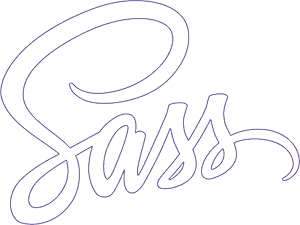

SASS
 Sass (syntactically awesome stylesheets) is a style sheet language initially designed by Hampton Catlin and developed by Natalie Weizenbaum. After its initial versions, Weizenbaum and Chris Eppstein continued to extend Sass with SassScript, a simple scripting language used in Sass files.
Sass (syntactically awesome stylesheets) is a style sheet language initially designed by Hampton Catlin and developed by Natalie Weizenbaum. After its initial versions, Weizenbaum and Chris Eppstein continued to extend Sass with SassScript, a simple scripting language used in Sass files.
 Sass is a scripting language that is interpreted or compiled into Cascading Style Sheets (CSS). SassScript is the scripting language itself. Sass consists of two syntaxes. The original syntax, called "the indented syntax", uses a syntax similar to Haml.[4] It uses indentation to separate code blocks and newline characters to separate rules. The newer syntax, "SCSS", uses block formatting like that of CSS. It uses braces to denote code blocks and semicolons to separate lines within a block. The indented syntax and SCSS files are traditionally given the extensions .sass and .scss, respectively.
The official implementation of Sass is open-source and coded in Ruby; however, other implementations exist, including PHP, and a high-performance implementation in C called libSass. There's also a Java implementation called JSass. Additionally, Vaadin has a Java implementation of Sass. The indented syntax is a metalanguage. SCSS is a nested metalanguage, as valid CSS is valid SCSS with the same semantics. Sass supports integration with the Firefox extension Firebug.